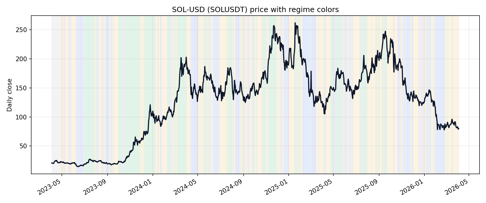
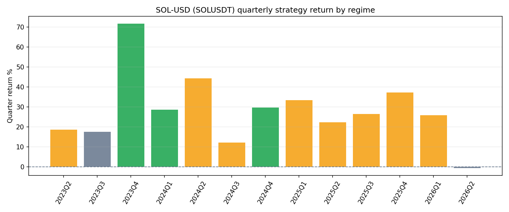
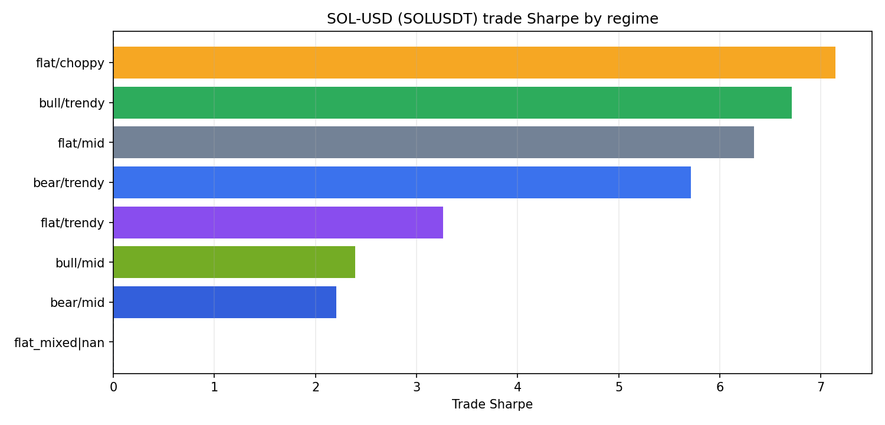
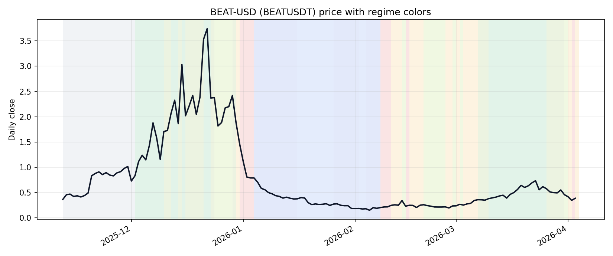
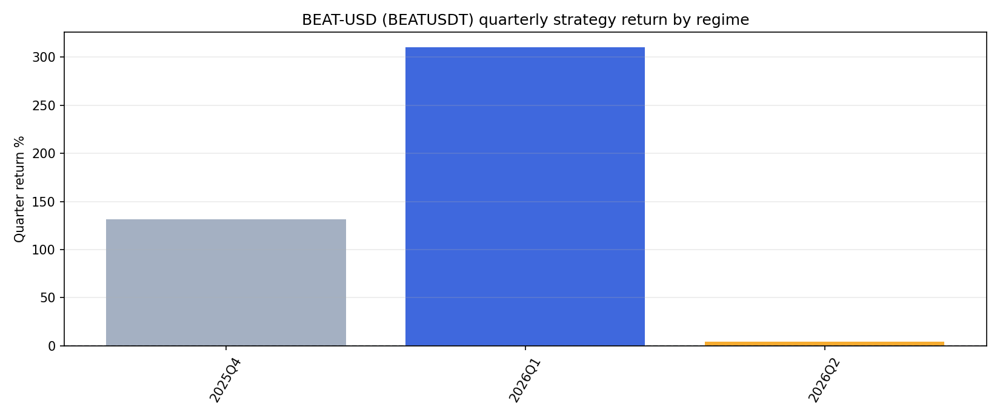
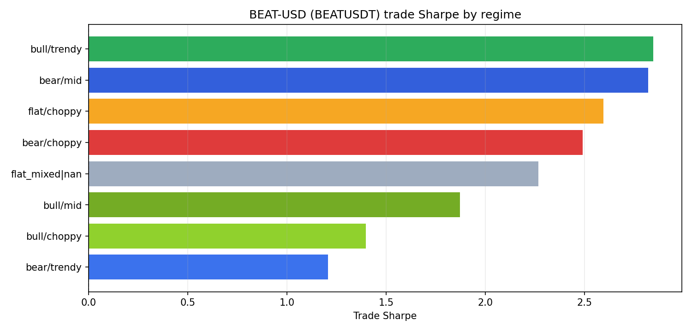
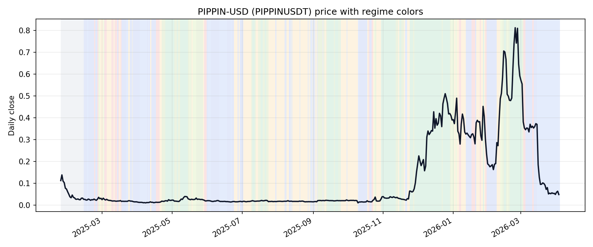
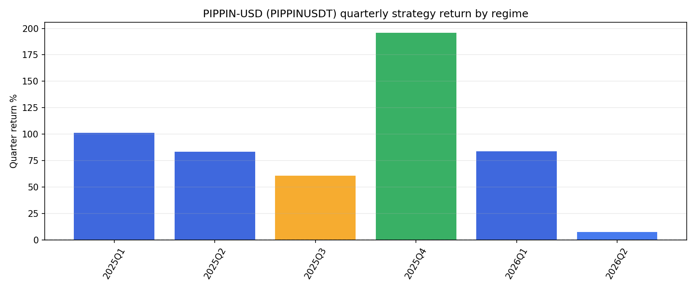
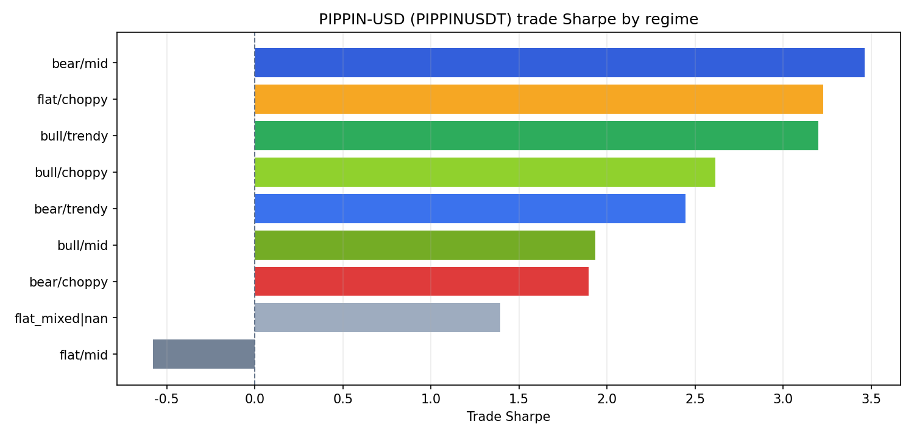

preview_unclosed_15m 模式用未收盘 15m K 线价格估算小时级 EMA，等效提前约 45 分钟预知未来；(2) 回测脚本 warmup 窗口膨胀，导致长期回测结果被撤回作废（见 INVALIDATED_BY_WARMUP_AUDIT_2026-04-07.md）；(3) 实盘 vs 模拟 close match rate 仅 11.8%，去除 preview 后所有时间窗口 live-like 回测均为负收益。生成时间：2026-04-03 12:52 UTC ｜ 研究口径：单币 32b live-parity 骨架（TP/SL/timeout）+ 近 20 日市场状态颜色分类。
这页在看三件事：历史上它大多数时间是什么颜色、这些颜色下 32b 的收益/Sharpe 怎么变、现在它是什么颜色，适不适合做。



| regime_label_cn | trades | total_return | avg_trade_ret | win_rate | trade_sharpe | first_trade | last_trade |
|---|---|---|---|---|---|---|---|
| 橙色：震荡且乱 | 299 | 131.19% | 0.28% | 71.57% | 7.147 | 2023-04-24 | 2026-04-01 |
| 绿色：上涨且顺滑（更适合） | 227 | 152.95% | 0.41% | 70.48% | 6.715 | 2023-06-30 | 2026-03-15 |
| 灰色：中性混合 | 151 | 64.68% | 0.33% | 78.15% | 6.340 | 2023-05-03 | 2026-03-17 |
| 蓝色：下跌但顺滑 | 97 | 56.04% | 0.46% | 78.35% | 5.715 | 2023-05-25 | 2026-02-19 |
| 紫色：震荡里有段落性趋势 | 10 | 4.74% | 0.46% | 90.00% | 3.263 | 2025-05-03 | 2026-01-07 |
| 浅绿：上涨但一般顺 | 71 | 21.54% | 0.28% | 66.20% | 2.394 | 2023-11-24 | 2026-03-04 |
| 深蓝：下跌但一般顺 | 66 | 18.92% | 0.27% | 63.64% | 2.205 | 2023-06-10 | 2026-02-23 |
| flat_mixed|nan | 13 | -0.01% | 0.00% | 46.15% | 0.005 | 2023-04-04 | 2023-04-21 |
| quarter | quarter_start | quarter_end | regime_label_cn | quarter_return | trade_sharpe | avg_trend_return_20d | avg_efficiency_20d | trades |
|---|---|---|---|---|---|---|---|---|
| 2026Q2 | 2026-04-01 | 2026-04-03 | 灰色：中性混合 | -0.67% | - | -8.61% | 0.175 | 1 |
| 2026Q1 | 2026-01-01 | 2026-03-31 | 橙色：震荡且乱 | 25.86% | 5.045 | -5.84% | 0.223 | 65 |
| 2025Q4 | 2025-10-01 | 2025-12-31 | 橙色：震荡且乱 | 37.16% | 5.280 | -11.44% | 0.188 | 88 |
| 2025Q3 | 2025-07-01 | 2025-09-30 | 橙色：震荡且乱 | 26.34% | 4.393 | 10.28% | 0.204 | 75 |
| 2025Q2 | 2025-04-01 | 2025-06-30 | 橙色：震荡且乱 | 22.31% | 3.386 | 3.71% | 0.249 | 73 |
| 2025Q1 | 2025-01-01 | 2025-03-31 | 橙色：震荡且乱 | 33.27% | 3.300 | -7.40% | 0.211 | 82 |
| 2024Q4 | 2024-10-01 | 2024-12-31 | 绿色：上涨且顺滑（更适合） | 29.62% | 3.986 | 9.07% | 0.270 | 85 |
| 2024Q3 | 2024-07-01 | 2024-09-30 | 橙色：震荡且乱 | 12.08% | 1.560 | 1.67% | 0.201 | 84 |
| 2024Q2 | 2024-04-01 | 2024-06-30 | 橙色：震荡且乱 | 44.21% | 5.384 | -4.25% | 0.219 | 74 |
| 2024Q1 | 2024-01-01 | 2024-03-31 | 绿色：上涨且顺滑（更适合） | 28.54% | 2.392 | 19.35% | 0.306 | 99 |
| 2023Q4 | 2023-10-01 | 2023-12-31 | 绿色：上涨且顺滑（更适合） | 71.70% | 6.443 | 42.04% | 0.476 | 92 |
| 2023Q3 | 2023-07-01 | 2023-09-30 | 灰色：中性混合 | 17.48% | 3.092 | 6.08% | 0.285 | 62 |
这页在看三件事：历史上它大多数时间是什么颜色、这些颜色下 32b 的收益/Sharpe 怎么变、现在它是什么颜色，适不适合做。



| regime_label_cn | trades | total_return | avg_trade_ret | win_rate | trade_sharpe | first_trade | last_trade |
|---|---|---|---|---|---|---|---|
| 绿色：上涨且顺滑（更适合） | 51 | 79.32% | 1.20% | 72.55% | 2.847 | 2025-12-04 | 2026-03-25 |
| 深蓝：下跌但一般顺 | 29 | 32.10% | 0.98% | 72.41% | 2.820 | 2026-01-04 | 2026-02-07 |
| 橙色：震荡且乱 | 22 | 23.89% | 0.99% | 72.73% | 2.594 | 2026-02-12 | 2026-04-03 |
| 红色：下跌且乱（更差） | 13 | 21.34% | 1.52% | 76.92% | 2.491 | 2026-01-01 | 2026-04-02 |
| flat_mixed|nan | 32 | 48.69% | 1.30% | 75.00% | 2.268 | 2025-11-13 | 2025-12-01 |
| 浅绿：上涨但一般顺 | 32 | 48.31% | 1.32% | 71.88% | 1.871 | 2025-12-10 | 2026-03-30 |
| 黄绿：上涨但比较抖 | 19 | 17.78% | 0.90% | 63.16% | 1.398 | 2025-12-24 | 2026-03-31 |
| 蓝色：下跌但顺滑 | 15 | 7.28% | 0.48% | 60.00% | 1.206 | 2026-01-16 | 2026-02-03 |
| quarter | quarter_start | quarter_end | regime_label_cn | quarter_return | trade_sharpe | avg_trend_return_20d | avg_efficiency_20d | trades |
|---|---|---|---|---|---|---|---|---|
| 2026Q2 | 2026-04-01 | 2026-04-03 | 橙色：震荡且乱 | 4.44% | - | -10.48% | 0.056 | 4 |
| 2026Q1 | 2026-01-01 | 2026-03-31 | 深蓝：下跌但一般顺 | 310.54% | 6.643 | -0.13% | 0.344 | 138 |
| 2025Q4 | 2025-11-12 | 2025-12-31 | flat_mixed|nan | 131.43% | 2.571 | 144.40% | 0.437 | 71 |
这页在看三件事：历史上它大多数时间是什么颜色、这些颜色下 32b 的收益/Sharpe 怎么变、现在它是什么颜色，适不适合做。



| regime_label_cn | trades | total_return | avg_trade_ret | win_rate | trade_sharpe | first_trade | last_trade |
|---|---|---|---|---|---|---|---|
| 深蓝：下跌但一般顺 | 146 | 96.33% | 0.48% | 63.70% | 3.464 | 2025-02-14 | 2026-03-14 |
| 橙色：震荡且乱 | 123 | 59.64% | 0.39% | 63.41% | 3.229 | 2025-03-01 | 2026-02-09 |
| 绿色：上涨且顺滑（更适合） | 145 | 185.45% | 0.77% | 60.69% | 3.201 | 2025-04-25 | 2026-03-01 |
| 黄绿：上涨但比较抖 | 15 | 26.68% | 1.62% | 80.00% | 2.617 | 2025-02-26 | 2026-02-12 |
| 蓝色：下跌但顺滑 | 75 | 59.45% | 0.65% | 66.67% | 2.445 | 2025-02-16 | 2026-04-03 |
| 浅绿：上涨但一般顺 | 61 | 33.84% | 0.50% | 55.74% | 1.933 | 2025-04-22 | 2026-03-02 |
| 红色：下跌且乱（更差） | 35 | 22.15% | 0.59% | 60.00% | 1.894 | 2025-02-22 | 2026-03-04 |
| flat_mixed|nan | 25 | 19.74% | 0.76% | 60.00% | 1.395 | 2025-01-24 | 2025-02-11 |
| 灰色：中性混合 | 14 | -2.11% | -0.15% | 42.86% | -0.580 | 2025-03-27 | 2025-09-30 |
| quarter | quarter_start | quarter_end | regime_label_cn | quarter_return | trade_sharpe | avg_trend_return_20d | avg_efficiency_20d | trades |
|---|---|---|---|---|---|---|---|---|
| 2026Q2 | 2026-04-01 | 2026-04-03 | 蓝色：下跌但顺滑 | 7.44% | 1.036 | -84.31% | 0.315 | 8 |
| 2026Q1 | 2026-01-01 | 2026-03-31 | 深蓝：下跌但一般顺 | 83.61% | 2.370 | 6.30% | 0.273 | 144 |
| 2025Q4 | 2025-10-01 | 2025-12-31 | 绿色：上涨且顺滑（更适合） | 196.00% | 3.642 | 182.70% | 0.547 | 117 |
| 2025Q3 | 2025-07-01 | 2025-09-30 | 橙色：震荡且乱 | 60.69% | 3.051 | 6.97% | 0.160 | 137 |
| 2025Q2 | 2025-04-01 | 2025-06-30 | 深蓝：下跌但一般顺 | 83.29% | 3.132 | 8.38% | 0.263 | 130 |
| 2025Q1 | 2025-01-24 | 2025-03-31 | 深蓝：下跌但一般顺 | 101.37% | 3.388 | -28.57% | 0.161 | 103 |